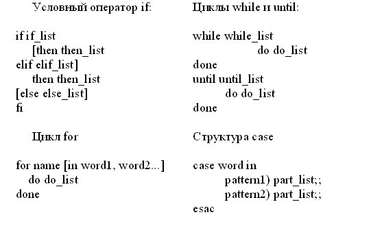
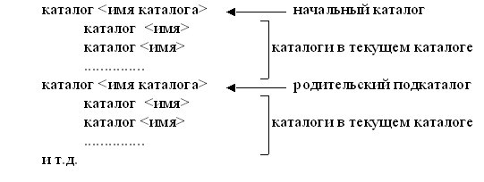
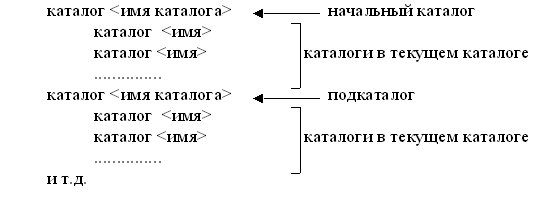
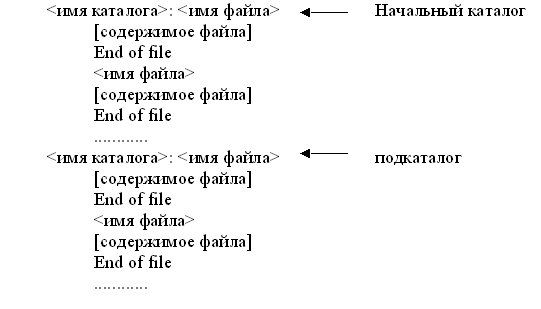
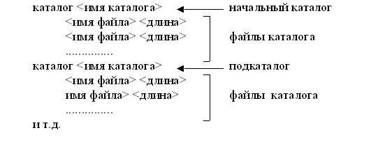

Управление системными ресурсами средствами shell-интерпретатора
Ознакомиться с основами программирования на уровне командного языка Shell путём написания
Shell-программ для работы с файловой системой.
-
Изучить программные средства языка Shell (структура команды, группирование команд, перенаправление ввода-вывода,
конвейер команд, Shell-переменные, макроподстановка результатов в Shell-командах, программные конструкции).
-
Ознакомиться с заданием к лабораторной работе.
-
Для указанного варианта составить Shell-программу, выполняющую требуемые действия в файловой системе.
-
Отладить и оттестировать составленную Shell-программу.
-
Защитить лабораторную работу, ответив на контрольные вопросы.
Обычно в ОС UNIX доступны несколько интерпретаторов. Наиболее распространены Bourne-shell (или просто - shell), C-shell,
Korn-shell. В идейном плане все эти интерпретаторы близки и в дальнейшем речь будет идти о стандартном Shell (/bin/sh).
Работая на командном языке, пользователь может вводить переменные, присваивать им значения, выполнять простые команды,
строить составные команды, управлять потоком выполнения команд, объединять последовательность команд в процедуры (командные
файлы). На уровне командного языка доступны такие свойства системы как соединение процессов через программный канал, направление
стандартного ввода/вывода в конкретные файлы, синхронное и асинхронное выполнение команд.
Если указанный интерпретатору файл является текстовым и содержит команды командного языка (командный файл) и при этом имеет
разрешение на выполнение (помечен "х"), Shell-интерпретатор интерпретирует и выполняет команды этого файла. Другой способ
вызова командного файла - использование команды sh (вызов интерпретатора), в котором первым аргументом указывается имя командного
файла.
Коротко перечислим средства группирования команд и перенаправления ввода/вывода:
-
cmd1 arg ...; cmd2 arg ...; ... cmdN arg ... - последовательное выполнение команд;
-
cmd1 arg ... & cmd2 arg ... & ... cmdN arg ... - асинхронное выполнение команд;
-
cmd1 arg ... && cmd2 arg ... - зависимость последующей команды от предыдущей таким образом, что последующая
команда выполняется, если предыдущая выдала нулевое значение;
-
cmd1 arg ... || cmd2 arg ... - зависимость последующей команды от предыдущей таким образом, что последующая команда
выполняется, если предыдущая выдала ненулевое значение;
-
cmd > file - стандартный вывод направлен в файл file;
-
cmd >> file - стандартный вывод направлен в конец файла file;
-
cmd < file - стандартный ввод выполняется из файла file;
-
cmd1 | cmd2 - конвейер команд, в котором стандартный вывод команды cmd1 направлен на стандартный вход команды cmd2.
Shell-переменные могут хранить строки текста. Правила формирования их имен аналогичны правилам задания имен переменных
в обычных языках программирования. При необходимости присвоить Shell-переменной значение, содержащее пробелы и другие
специальные знаки, оно заключается в кавычки. При использовании Shell-переменной в выражении ее имени должен предшествовать
знак $. В последовательности символов те из них, которые составляют имя, должны быть выделены в
{ } или " ". Кроме того, интерпретатор Shell автоматически присваивает
значения пяти своим переменным:
-
$? - значение, возвращаемое последней выполняемой командой;
-
$$ - идентификационный номер процесса Shell;
-
$! - идентификационный номер фонового процесса, запускаемого интерпретатором Shell последним;
-
$# - число аргументов, переданных в Shell;
-
$– - флаги, переданные в Shell.
Для отмены специальных символов ($, |, пробел и т.д.) в Shell-программах
существуют следующие правила:
-
если символу предшествует обратная косая черта, то его специальный символ отменяется;
-
отменяется специальный смысл всех символов, вошедших в последовательность, заключенную в апострофы.
При вызове Shell-программ им могут передаваться параметры. Соответствующие аргументы в Shell-программах идентифицируются
$1, $2, $3 и т.д. Кроме того, переменная
$0 соответствует имени выполняемой Shell-программы, а переменная $#
- числу аргументов в команде.
Shell-интерпретатор дает возможность выполнять подстановку результатов выполнения команд в Shell-программах. Если команда
заключена в одиночные обратные кавычки, то интерпретатор Shell выполняет эту команду и подставляет вместо нее полученный
результат.
Наиболее важные команды для составления Shell-программ:
-
команда echo выводит в выходной поток значения своих аргументов;
-
команда expr выполняет арифметические действия над своими аргументами;
-
команда eval обеспечивает дополнительный уровень подстановки своих аргументов, а затем их выполнение;
-
команда test с соответствующими ключами проверяет необходимое условие;
-
команда sleep служит для реализации задержки.
Программные конструкции Shell-программ:

-
Shell-программа выводит имена тех каталогов в каталоге, которые в себе содержат каталоги. Имя каталога задано
параметром Shell-программы.
-
Shell-программа просматривает каталог, имя которого указано параметром Shell-программы и выводит имена встретившихся
каталогов. Затем осуществляет переход в родительский каталог, который становится текущим и повторяются указанные
действия до тех пор, пока текущим каталогом не станет корневой каталог. Форма вывода результата:

-
Shell-программа подсчитывает количество и выводит перечень каталогов в хронологическом порядке (по дате создания) в
поддереве, начиная с каталога, имя которого задано параметром Shell-программы. Форма вывода результата:

-
Shell-программа объединяет все временные файлы с указанным суффиксом (например, .tmp) в поддереве, начиная с
каталога, имя которого задано параметром Shell-программы. Результат объединения помещается либо в указанный
Shell-программой файл, либо выводится на экран в форме:

-
Shell-программа периодически с некоторым интервалом удаляет все временные файлы с указанным суффиксом (например,
.tmp) в поддереве, начиная с каталога, имя которого задано параметром Shell-программы и выводит при этом список
объединенных файлов в форме:

-
Shell-программа выводит содержимое каталога, имя которого указано параметром Shell-программы. При выводе сначала
перечисляются имена каталогов, а затем в алфавитном порядке имена файлов с указанием их длин, даты создания и числа
ссылок на них.
-
Shell-программа подсчитывает количество и выводит список всех файлов (без каталогов) в порядке уменьшения их длин в
поддереве, начиная с каталога, имя которого задано параметром Shell-программы. Форма вывода результата:
-
Shell-программа просматривает каталог, имя которого указано параметром Shell-программы и выводит имена встретившихся
файлов. Затем осуществляет переход в родительский каталог, который становится текущим и повторяются указанные
действия до тех пор, пока текущим каталогом не станет корневой каталог. Форма вывода результата:
-
Shell-программа подсчитывает количество и выводит список всех файлов (без каталогов) в алфавитном порядке в
поддереве, начиная с каталога, имя которого задано параметром Shell-программы. Форма вывода результата:
-
Shell-программа выводит имена тех каталогов в каталоге, которые в себе не содержат каталогов. Имя каталога задано
параметром Shell-программы.
-
Что такое внутренние и внешние команды Shell-интерпретатора? Приведите примеры внутренних команд.
-
Какие существуют средства группирования команд? Приведите примеры использования.
-
Как осуществляется перенаправление ввода-вывода?
-
В чем сущность конвейера команд? Приведите примеры использования.
-
Как средствами Shell выполнить арифметические действия над Shell-переменной?
-
Каковы правила генерации имен файлов?
-
Как выполняется подстановка результатов выполнения команд?
-
Как интерпретировать строку cmd1 & cmd2 & ?
-
Как интерпретировать строку cmd1 && cmd2 & ?
-
Как интерпретировать строку cmd1 || cmd2 & ?
-
В каком режиме выполняется интерпретатор команд Shell?
-
Кем и в каком режиме осуществляется чтение потока символов с терминала интерпретатором Shell?